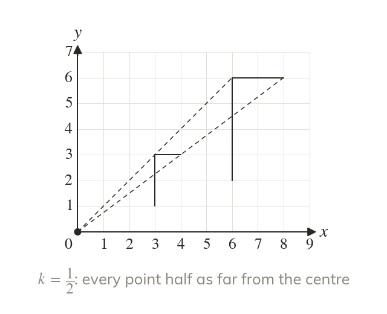
A fraction makes it smaller
A scale factor between and gives a smaller image. It is still called an enlargement.
A photo shrunk to a thumbnail is still an enlargement, with a scale factor below
A lens that flips its picture upside down works like a negative scale factor.
Work down the page at your own pace. Write every answer in your book first, then click to check it.
Read each card, then follow the worked examples one step at a time.

A scale factor between and gives a smaller image. It is still called an enlargement.
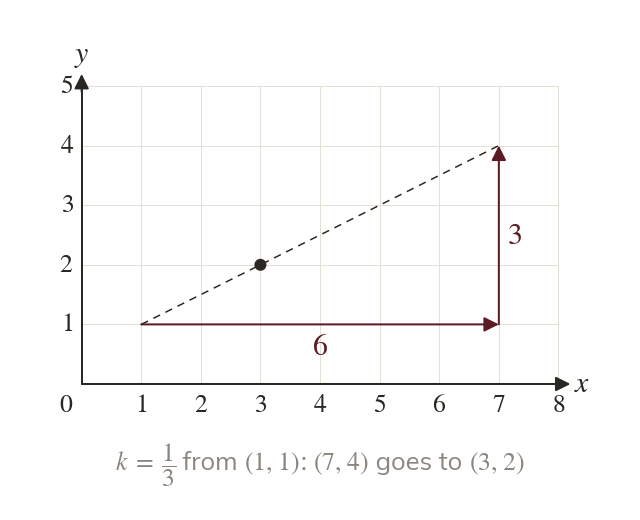
Count each step from the centre and multiply it by the fraction. With right and up becomes right and up.
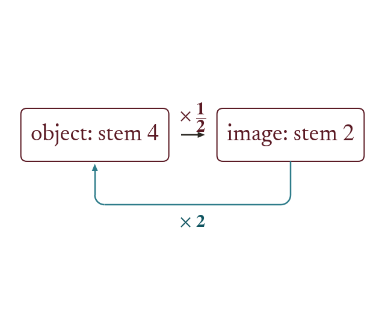
Scale factor about the same centre undoes scale factor
The object and the image are similar either way.
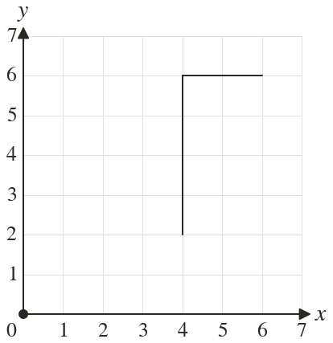
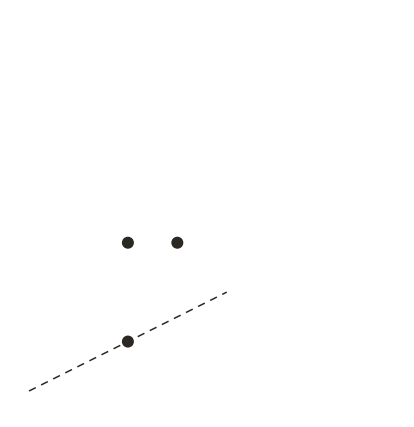
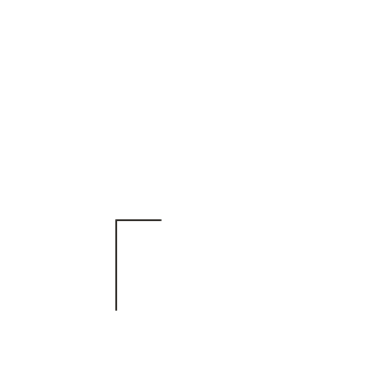
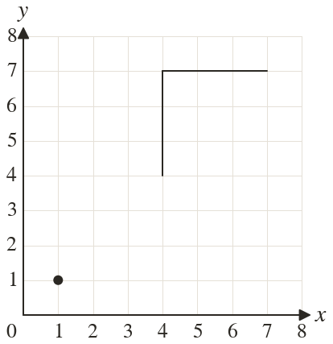
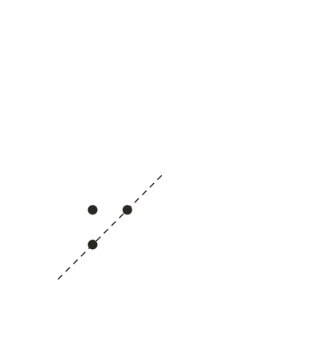
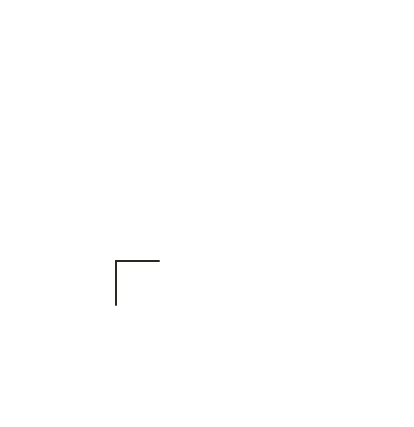
Pick an answer. If it's wrong, the feedback tells you which mistake it was.
Printable worksheet — the questions with room to work.
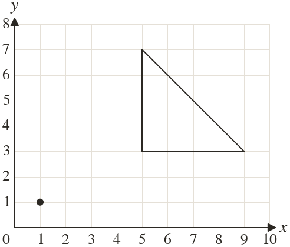
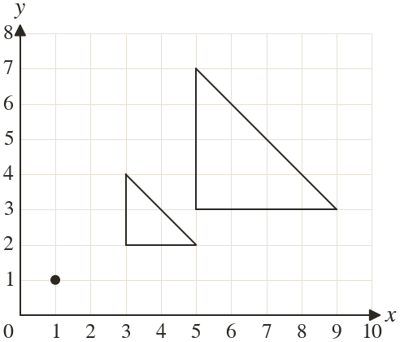
Read each card, then follow the worked examples one step at a time.
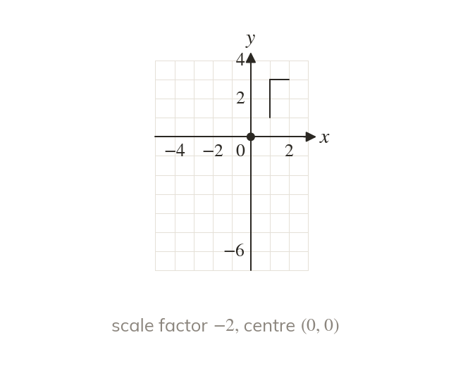
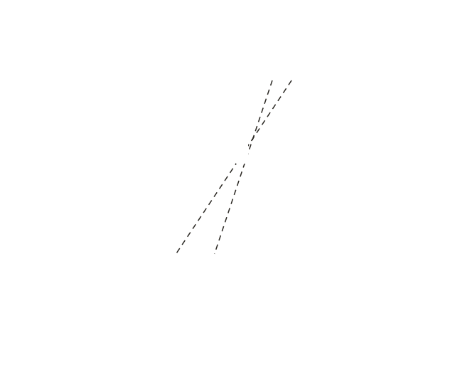
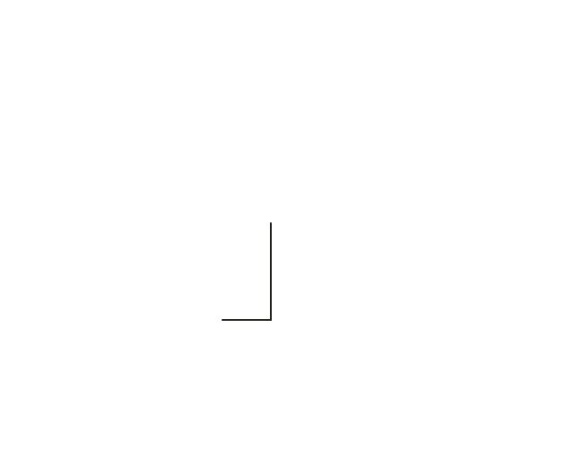
A negative scale factor puts the image on the other side of the centre. Each point goes through the centre and beyond.
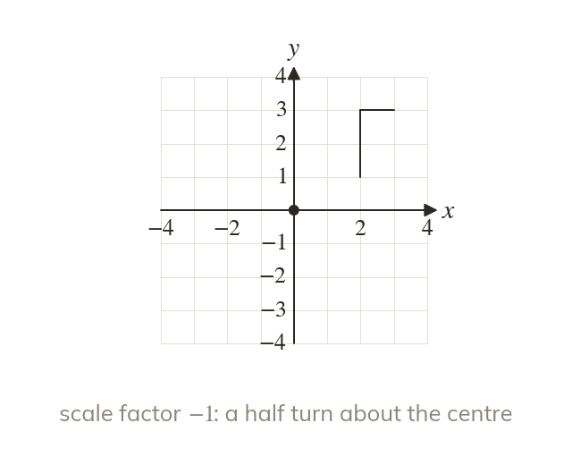
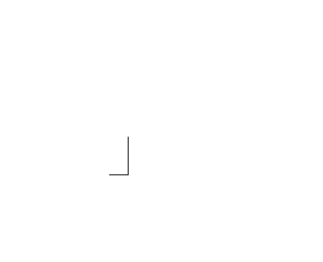
The image is also upside down. Scale factor is scale factor then a half turn. The centre never moves.
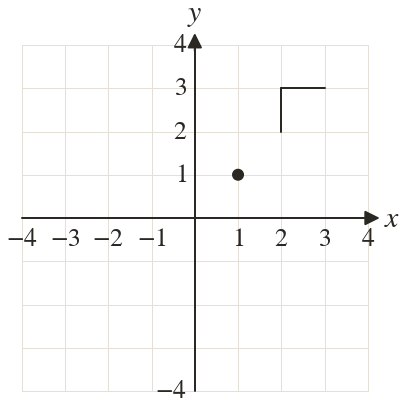
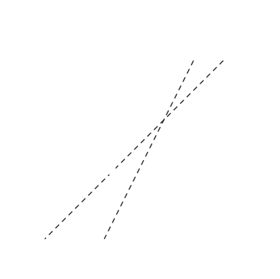
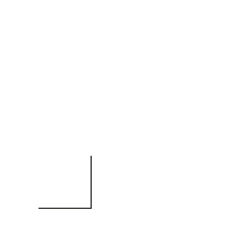
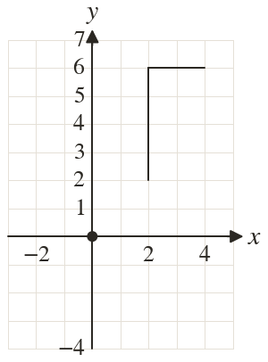
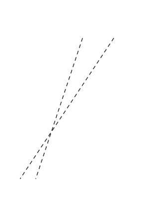
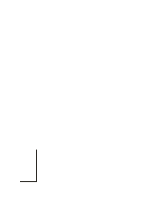
Pick an answer. If it's wrong, the feedback tells you which mistake it was.
Printable worksheet — the questions with room to work.
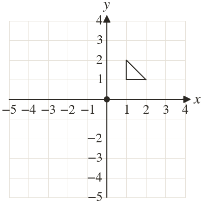
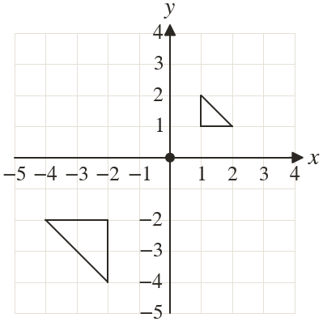
Finished? Next lesson: 10H.12.5 Describing Transformations.
For each skill, tap the one that is true for you today. Your Revise pages start with anything you mark Not yet.
Your ratings are saved on this device only.
Log in, then search for a code to practise that skill.
Videos, worksheets and more on each part of this lesson.